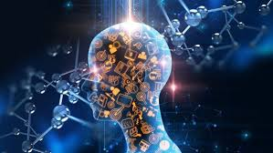

La inteligencia artificial (IA) es la base a partir de la cual se imitan los procesos de inteligencia humana mediante la creación y la aplicación de algoritmos creados en un entorno dinámico de computación. O bien, dicho de forma sencilla, la IA consiste en intentar que los ordenadores piensen y actúen como los humanos.
Para conseguirlo, se necesitan tres componentes fundamentales:

Desde al menos el siglo I a.C., los humanos se han planteado la posibilidad de crear máquinas que imiten al cerebro humano. Ya en la época moderna, John McCarthy acuñó el término «inteligencia artificial» en 1955. En 1956, McCarthy y algunos otros organizaron una conferencia denominada «Dartmouth Summer Research Project on Artificial Intelligence». Este encuentro dio lugar a la creación del aprendizaje automático, el aprendizaje profundo, el análisis predictivo y, ahora, el análisis prescriptivo. También dio lugar a un campo de estudio totalmente nuevo: la ciencia de los datos.
Hoy en día, la cantidad de datos que se genera, tanto por parte de los humanos como por parte de las máquinas, supera en gran medida la capacidad que tienen las personas de absorber, interpretar y tomar decisiones complejas basadas en esos datos. La inteligencia artificial supone la base de todo el aprendizaje automático y el futuro de todos los procesos complejos de toma de decisiones. Por ejemplo, la mayoría de los humanos pueden averiguar cómo no perder cuando juegan al tres en raya, aunque haya 255 168 movimientos únicos, de los cuales 46 080 terminan en tablas. Muchos menos podrían llegar a ser grandes maestros de las damas, con más de 500 x 1018 o 500 trillones de posibles movimientos diferentes. Los ordenadores son extremadamente eficientes a la hora de calcular estas combinaciones y permutaciones para llegar a la mejor decisión. La IA (y su evolución lógica del aprendizaje automático) y el aprendizaje profundo constituyen los cimientos del futuro en la toma de decisiones empresariales.
| Características de la IA | Explicación corta |
| Aprendizaje automático | La IA puede aprender de datos y experiencias para mejorar sus habilidades. |
| Toma de decisiones | Puede analizar datos complejos para tomar decisiones y resolver problemas. |
| Adaptabilidad | Tiene la capacidad de ajustarse y mejorar su rendimiento en función de nuevas información y contextos. |
| Interactividad | Puede interactuar con humanos y otros sistemas de manera inteligente y natural. |
| Automatización | Permite la automatización de tareas repetitivas y complejas, aumentando la eficiencia. |
| Procesamiento del lenguaje natural | Puede entender y generar lenguaje humano de forma avanzada. |
| Visión por computadora | Tiene la capacidad de interpretar y analizar imágenes y videos. |
| Autooptimización | Es capaz de mejorar sus propios algoritmos y desempeño con el tiempo. |
| Redes neuronales | Utiliza estructuras inspiradas en el cerebro humano para procesar información y aprender. |
| Escalabilidad | Puede manejar grandes cantidades de datos y aumentar su capacidad de procesamiento según sea necesario |
| Seguridad | Puede identificar y mitigar riesgos de seguridad de forma autónoma para proteger datos y sistemas. |
El desarrollo y despliegue de los modelos de aprendizaje automático se realiza en múltiples etapas, entre las cuales se encuentran el entrenamiento y la inferencia. El entrenamiento y la inferencia de IA se refieren al proceso de experimentar con modelos de aprendizaje automático para resolver un problema. Por ejemplo, un ingeniero de aprendizaje automático puede experimentar con diferentes modelos candidatos para una aplicación de visión artificial, como la detección de fracturas óseas en imágenes de rayos X.Para mejorar la precisión de estos modelos, el ingeniero debe proporcionar datos a los modelos y ajustar los parámetros hasta que alcancen un umbral predefinido. Estas necesidades de entrenamiento, proporcionales a la complejidad de los modelos, crecen exponencialmente cada año.Las tecnologías de infraestructura claves para el entrenamiento de IA a escala incluyen redes de clústeres, como RDMA e InfiniBand, recursos informáticos de GPU de hardware dedicado y almacenamiento de alto rendimiento.

Existen numerosas historias de éxito que demuestran el valor de la IA. Las organizaciones que incorporan el machine learning y las interacciones cognitivas a las aplicaciones y a los procesos empresariales tradicionales mejoran en mayor medida la experiencia y la productividad del usuario. Sin embargo, la base no está lo suficientemente afianzada. Pocas compañías han implementado la IA de manera equilibrada por varias razones. Por ejemplo, si no usan informática en la nube, los proyectos de aprendizaje automático a menudo son costosos a nivel informático. También son complejos de diseñar y requieren una experiencia que es muy demandada pero cuya oferta es escasa. Saber cuándo y dónde incorporar estos proyectos, así como cuándo recurrir a terceros, ayudará a minimizar estas dificultades.
Los beneficios de implementar la inteligencia artificial (IA) en las operaciones empresariales son innegables. Aquellas organizaciones que logran integrar de manera exitosa el aprendizaje automático y las interacciones cognitivas en sus procesos y aplicaciones tradicionales experimentan mejoras sustanciales en la productividad y en la experiencia del usuario. Esta transformación tecnológica potencia la toma de decisiones basada en datos y permite automatizar tareas repetitivas, liberando así recursos para actividades más estratégicas y creativas.
No obstante, los desafíos persisten en la adopción generalizada de la IA. La inversión en infraestructura y recursos necesarios para la implementación puede ser prohibitiva para muchas empresas, especialmente aquellas que no cuentan con recursos financieros o técnicos significativos. Además, la complejidad de diseño y la demanda de especialistas en IA crean una brecha en el acceso a esta tecnología. Para superar estos obstáculos, es fundamental que las organizaciones evalúen cuidadosamente cuándo y cómo incorporar la IA en sus operaciones, considerando la colaboración con expertos externos y aprovechando soluciones basadas en la nube para optimizar costos y acelerar la adopción.
Algunas tecnologías con inteligencia existen desde hace más de 50 años, pero los avances en la potencia informática, la disponibilidad de enormes cantidades de datos y nuevos algoritmo han permitido que se den grandes avances de IA en los últimos años. La inteligencia artificial tiene un papel central en la transformación digital de la sociedad y ha pasado a ser una prioridad de la UE.Se espera que sus aplicaciones futuras impliquen grandes cambios, pero la IA ya está presente en nuestras vidas. Más información sobre las oportunidades que ofrece la IA y la futura Ley de IA en la que trabaja la UE.
La inteligencia artificial es un campo fascinante que ha experimentado avances significativos en las últimas décadas. Es la capacidad de las máquinas para aprender, razonar y tomar decisiones, imitando la inteligencia humana en muchos aspectos. Este avance tecnológico ha revolucionado diversos sectores, desde la atención médica hasta la industria automotriz, transformando la forma en que vivimos y trabajamos.
Por un lado, la inteligencia artificial promete soluciones innovadoras para muchos problemas complejos que enfrenta la sociedad, como el cambio climático, la atención médica personalizada y la mejora de la eficiencia en diversos procesos. Gracias a la IA, se pueden analizar grandes cantidades de datos de manera rápida y precisa, identificando patrones y tendencias que serían imposibles de detectar por métodos convencionales. Esto brinda nuevas oportunidades para tomar decisiones informadas y crear un impacto positivo en nuestra sociedad.
Sin embargo, también plantea desafíos éticos y sociales. La IA plantea preguntas sobre la privacidad, la toma de decisiones autónoma y la posible desigualdad en el acceso a sus beneficios. Es fundamental abordar estas preocupaciones para garantizar que la inteligencia artificial se utilice de manera responsable y equitativa, maximizando sus beneficios para la humanidad en su conjunto. La reflexión constante sobre los avances de la inteligencia artificial y su impacto en la sociedad es esencial para guiar su desarrollo de manera ética y responsable.
©Macarena Valenzuela
Un sitio web muy conocido de IA